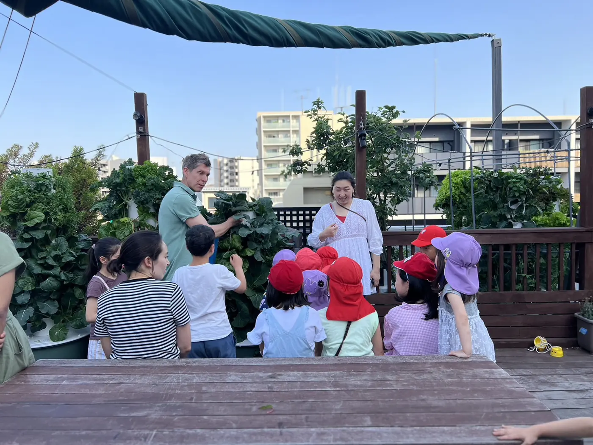
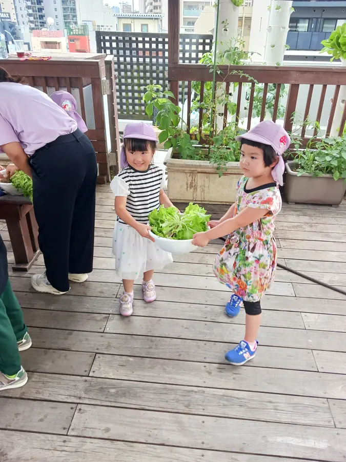

「娘が帰ってくるなり、ベランダでレタスを育てられないかと聞いてきて、その方法まで説明してくれました！」
清泉インターナショナル学園 保護者


日本の学校、家庭、地域、企業・団体のための、水耕栽培による都市農業システム、教育プログラム、パートナーシップ。


12月12日（土）13:00〜15:00、Art Farm Ikejiriにて。ご家族や栽培に興味のある方のための、水耕栽培体験ワークショップです。経験は不要。気軽に参加して、手を動かしてみてください。

12月14日〜23日、好きな日を選んで参加できます。水耕栽培、サイエンス、エンジニアリング、ものづくりを体験。5歳以上対象。受付中です。

自宅で新鮮な野菜を育てよう。タワーのリースは月額¥11,000から。料金はお選びいただくサービス内容によって異なります。配送・設置から基本の使い方まで、私たちがサポートします。


「娘が帰ってくるなり、ベランダでレタスを育てられないかと聞いてきて、その方法まで説明してくれました！」
清泉インターナショナル学園 保護者
「子どもたちが夕食の時間に水耕栽培の話をするようになりました。」
保護者の声
「まさか息子たちがケールを取り合う日が来るとは思いませんでした。」
保護者の声
教室やタワーでの収穫、ワークショップ、舞台裏の様子をお届けしています。
@greentopiajapan をフォロー